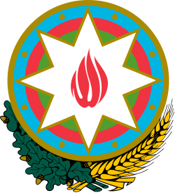

From Wikipedia, the free encyclopedia
This article is about the country. For other uses, see Azerbaijan (disambiguation).
Azerbaijan,[a]officially the Republic of Azerbaijan,[b] is a transcontinental and landlocked country at the boundary of Western Asia and Eastern Europe.[c] It is a part of the South Caucasus region and is bounded by the Caspian Sea to the east, Russia's republic of Dagestan to the north, Georgia to the northwest, Armenia and Turkey to the west, and Iran to the south. Baku is the capital and largest city.
The territory of what is now Azerbaijan was ruled first by Caucasian Albania and later by various Persian empires. Until the 19th century, it remained part of Qajar Iran, but the Russo-Persian wars of 1804–1813 and 1826–1828 forced the Qajar Empire to cede its Caucasian territories to the Russian Empire; the treaties of Gulistan in 1813 and Turkmenchay in 1828 defined the border between Russia and Iran. [12][13] The region north of the Aras was part of Iran until it was conquered by Russia in the 19th century,[14][15] where it was administered as part of the Caucasus Viceroyalty..
By the late 19th century, an Azerbaijani national identity emerged, and the Azerbaijan Democratic Republic proclaimed its independence from the Transcaucasian Democratic Federative Republic in 1918, a year after the Russian Empire collapsed, and became the first secular democratic Muslim-majority state. In 1920, the country was conquered and incorporated into the Soviet Union as the Azerbaijan SSR. The modern Republic of Azerbaijan proclaimed its independence on 30 August 1991,[16][17] shortly before the dissolution of the Soviet Union. In September 1991, the ethnic Armenian majority of the Nagorno-Karabakh region formed the self-proclaimed Republic of Artsakh, which became de facto independent with the end of the First Nagorno-Karabakh War in 1994, although the region and seven surrounding districts remained internationally recognized as part of Azerbaijan.[18][19][20][21] Following the Second Nagorno-Karabakh War in 2020, the seven districts and parts of Nagorno-Karabakh were returned to Azerbaijani control.[22] An Azerbaijani offensive in 2023 ended the Republic of Artsakh and resulted in the expulsion of Nagorno-Karabakh Armenians.
 Flag
Flag

EmblemAnthem:
Azərbaycan Respublikasının Dövlət himnidir
"State Anthem of the Republic of Azerbaijan"